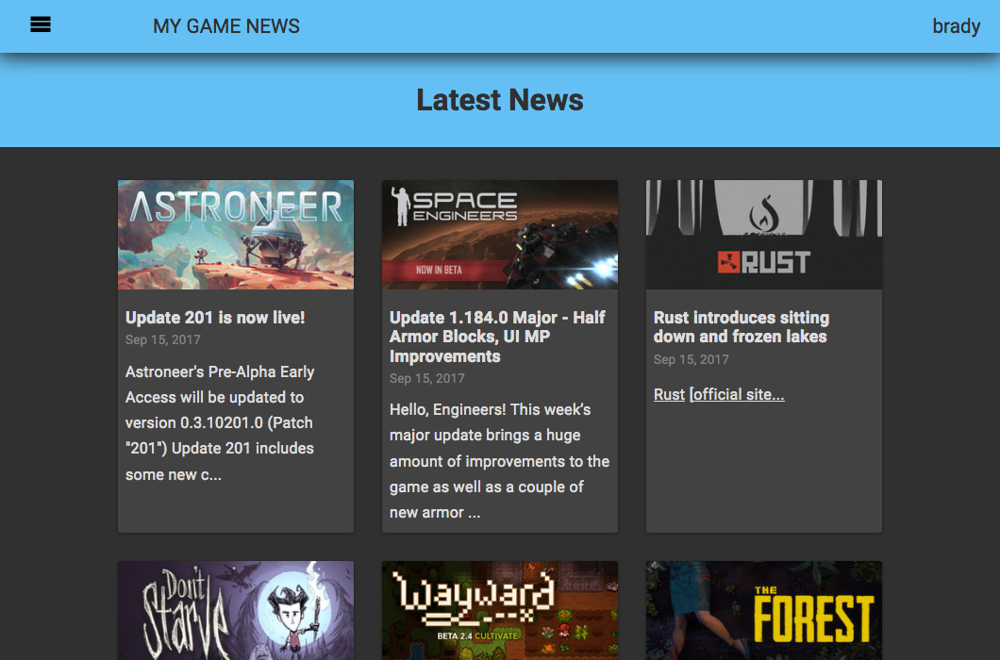
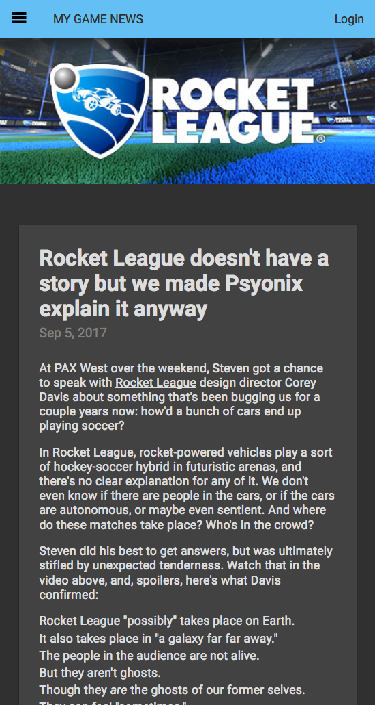

My Game News
Full-stack single page application using Angular on the front end, and NodeJS, Express, MongoDB, and the Steam API on the backend.
Angular 4 Angular CLI JavaScript ES6 MongoDB Steam API Angular Flex-Layout SPA Material Design NodeJS
Single page application that enables users to follow the latest news from Steam on their watchlist of games. Material Design-inspired, with fast and fluid animations.